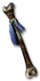

Set - Heyday
Grimlock's Grave
4 items, level 16, Necromancer

Grimlock's Skull
Zombie Head
Defense: 4-8
Chance to Block: 5%
Required Level: 16
25-30% Increased Chance of Blocking
+20% Faster Block Rate
(2 items) +100% Enhanced Defense

Grimlock's Wand
Bone Wand
Damage: 3-7
Required Level: 15
+1 to Necromancer Skill Levels
+33 to Mana
(3 items) Adds 8-20 Damage

Grimlock's Shroud
Quilted Armor
Defense: 8-11
Required Level: 11
+10% Physical Damage Reduction
15% chance to cast level 2 Frost Nova when struck
(2 items) +77 Defense
(3 items) +40% Mana Regeneration

Grimlock's Belt
Belt
Defense: 5-5
Required Level: 9
+20-25 to Life
+15% Faster Hit Recovery
(2 items) +20 Defense
Set bonuses
- 2 items: +10 to Energy
- 3 items: +10 to Dexterity
Full set
- +1 to Necromancer Skill Levels
- +50% Chance Items Roll Magic or Better
- -10% to Enemy Poison Resistance
- +25% to All Resistances